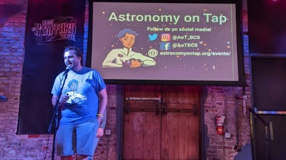

Mentoring and Outreach
I am deeply passionate about mentorship, outreach, and education with all socioeconomic backgrounds and age groups. One of my primary goals is to help astronomy as equitable and inclusive as it can be, and to use astronomy to reach our surrounding communities. Here you can find a small selection of my outreach and mentoring efforts.
Mentoring and Advising Graduates in an Inclusive Community (MAGIC)
For many, the transition into graduate school life is difficult time. Unfortunately, this is even more true for students who come from marginalized groups in society. In MAGIC, Texas A&M Astronomy's student-led peer mentoring program, our goal is to support, educate, and empower new graduate students to make graduate school not only bearable, but enjoyable. As coordinator of the MAGIC program, I worked to provide new students with a network of mentors to share experiences and build the department community, while introducing new students to grad school life in ways that classes and department orientations fail to do.
Astronomy on Tap
If you happened to find yourself at the Grand Stafford Theater in Bryan, TX on a Wednesday night from 2022-2024, you just might have seen me on stage for the local Astronomy on Tap! I had the pleasure of anchoring our monthly 'In the News' segment, where I shared the biggest news from the astronomy community. I have have recently relocated to Penn State, which has its own very active AoT chapter. Now you might find me winning trivia or pontificating about why Boron is objectively the worst element on the periodic table. AoT is a great place for people of all ages to come and see talks about astronomy. Perfect for all from the most amateur space enthusiasts to professors of astronomy, anyone can have a great time at an AoT event.